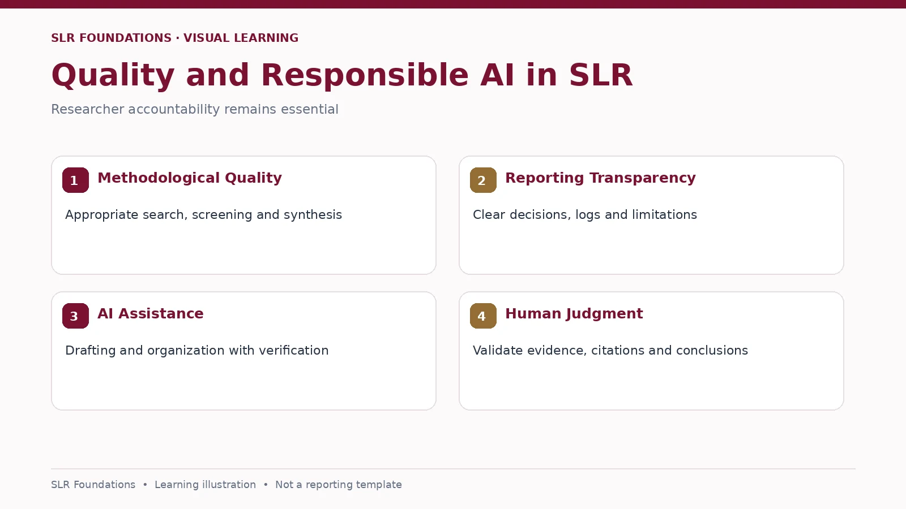

SLR FOUNDATIONS · PRE-HANDS-ON LEARNING
Quality, Publication & Responsible AI
Build a defensible review and use AI appropriately

What makes a high-quality SLR?
- A justified, focused review question and clear scope
- Documented, appropriate and sufficiently comprehensive search
- Transparent eligibility, selection and appraisal decisions
- Evidence extraction and synthesis aligned to RQs
- Clear limitations, reproducible reporting and meaningful contribution
More retrieved articles do not automatically mean a better review.
Publication readiness
Check journal scope, article type, author instructions, reporting requirements and contribution. Q1/Q2 status does not guarantee suitability or acceptance.
Responsible AI use
AI can suggest terms, improve clarity and help organise drafts. Verify every citation, DOI, quotation, metadata item, extraction and screening decision against primary sources. Follow your institution's and journal's AI disclosure and confidentiality rules.
Suggested AI prompt: “Suggest synonyms for these three research concepts. Separate established terminology from speculative terms, and explain which terms require database verification.”